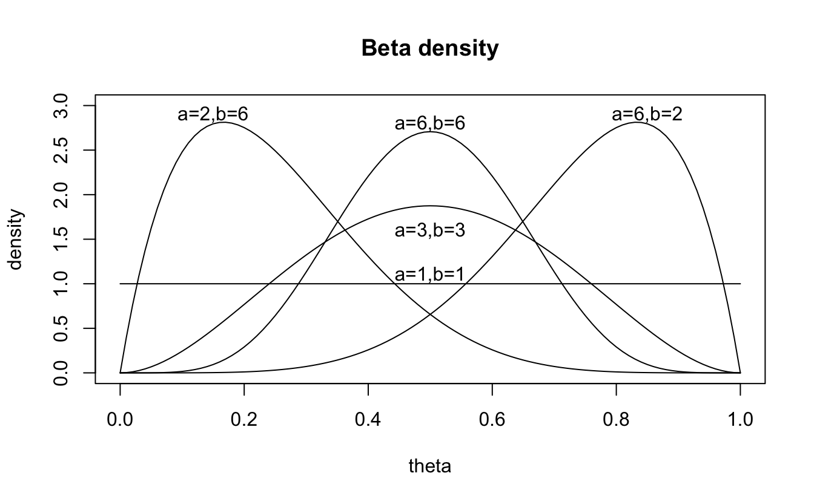
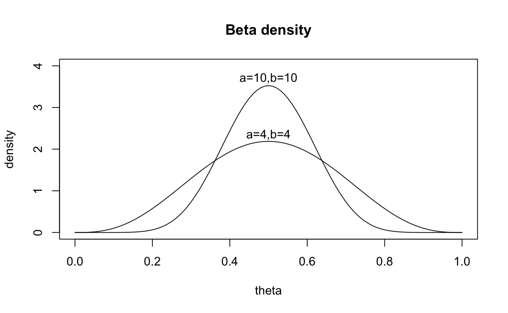
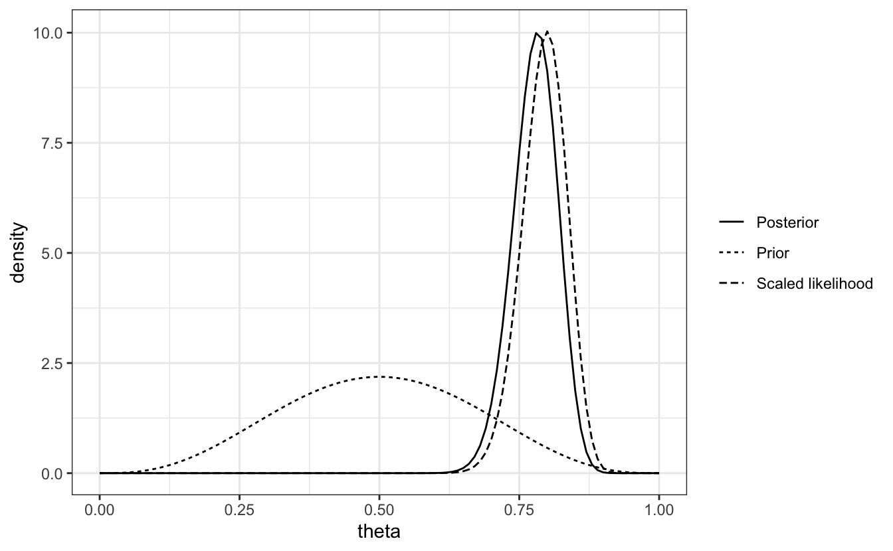
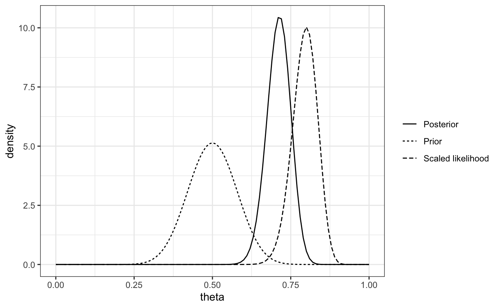

# set global knit options
knitr::opts_chunk$set(echo = T, # print chunks?
eval = T, # run chunks?
error = F, # print errors?
warning = F, # print warnings?
message = F, # print messages?
cache = F # cache?; be careful with this!
)
# suppress scientific notation
options(scipen=999)
# play a sound if error encountered
options(error = function() {beepr::beep(9)})
# load packages
## create list of package names
packages <- c( #"SIN", # this package was removed from the CRAN repository
"MASS", "dplyr", "tidyr", "purrr", "extraDistr", "ggplot2", "loo", "bridgesampling", "brms", "bayesplot", "tictoc", "hypr", "bcogsci", "papaja", "grid", "kableExtra", "gridExtra", "lme4", "cowplot", "pdftools", "cmdstanr", "rootSolve", "rstan"
)
# NB: if you haven't already installed bcogsci through devtools, it won't be loaded
## Now load or install & load all
package.check <- lapply(
packages,
FUN = function(x) {
if (!require(x, character.only = TRUE)) {
install.packages(x, dependencies = TRUE)
library(x, character.only = TRUE)
}
}
)
# this is also required, taken from the textbook
## Save compiled models:
rstan_options(auto_write = FALSE)
## Parallelize the chains using all the cores:
options(mc.cores = parallel::detectCores())
# To solve some conflicts between packages
select <- dplyr::select
extract <- rstan::extract2 Ch. 2
Set up
3 Ch. 2 - Intro to Bayesian data analysis
- simple but crucial point: the posterior distribution of a parameter is a compromise between the prior and the likelihood
Terms
- posterior, p($theta$|y): probability distribution of the parameters conditional on the data
- likelihood, p(y|$theta$): the PMF or PDF expressed as a function of \(\theta\)
- prior, $theta$: the initial probability distribution of paramters before seeing the data
- marginal likelihood, p(y): standardizes the posterior distribution to ensure the AUC sums to 1; it ensure the posterior is a valid probability distribution
3.1 Bayes’ Rule
- Bayes’ rule: when A and B are observable discrete events (like “it has been raining” or “the streets are wet”), we can state the rule as follows:
\[ P(A\mid B) = \frac{P(B\mid A) P(A)}{P(B)} \tag{2.1} \]
- given a vector of data y, we can work out the posterior distributions of parameters of interest which we represent as the vector of parameters \(\theta\)
- to do this, we can re-write equation 2.1 as 2.2:
\[ p(\boldsymbol{\Theta}|\boldsymbol{y}) = \cfrac{ p(\boldsymbol{y}|\boldsymbol{\Theta}) \cdot p(\boldsymbol{\Theta}) }{p(\boldsymbol{y})} \tag{2.2} \]
- now, Bayes’ rule is writen in terms of probability distributions, where p() is the probability density function (continuous) or probability mass function (discrete)
- in words, this simply means:
\[ \hbox{Posterior} = \frac{\hbox{Likelihood} \cdot \hbox{Prior}}{\hbox{Marginal Likelihood}} \]
3.2 Deriving the posterior using Bayes’ Rule: an analystical example
participants are shown sentences like It’s raining. I’m going to take the…
if 100 participants complete the sentence, and 80 complete the sentence with bus, the estimated cloze probability would be \(\frac{80}{100}\)=0.8
- this is the maximum likelihood estimate of the probability of producing the word; as this is an estimate let’s add a hat: \(\hat \theta\)=0.8
in the frequentist paradigm, \(\hat \theta\)=0.8 is an estimate of an unknown point value \(\theta\) “out there in nature”
N.B., the variability in the estimate will be influenced by the sample size
- if the true value of \(\theta\) is really 0.80, we will still get some variability in the estimated proportion from a sample size of say 10 pariticpants
- let’s carry out 100 simulated experiments and compute their variability:
estimated_means <- rbinom(n = 100, # generate 100 random binomial data sets
size = 10, # of 10 obvs each
prob = .8) / 10 # with prob 8, now divide these by 10 to get 100 means (k/n)
# what is the sd of these 100 means?
round(sd(estimated_means),3)[1] 0.125- instead, let’s imagine that \(\theta\) is a random variable; i.e., it has a PDF associated with it
- this PDDF would now represent our belief about possible values of \(\theta\) before we have any data
- e.g., if we believe from the outset that all possible values between 0 and 1 are equally likely, we would have a uniform prior of \(\theta \sim \mathit{Uniform}\)(0,1)
- let’s re-run our simulated experiments, but with two sources of variability: the data and our uncertainty associated with \(\theta\)
theta <- runif(100, min = 0, max = 1) # simulate 100 numbers between 0:1
estimated_means <- rbinom( # generate random binomial data that has...
n = 100, # 100x
size = 10, # of 10 obvs
prob = theta # with prob = theta
)/10 # divided by 10 to give us the mean for each
# sd of the means from these 100 'experiments'
round(sd(estimated_means),3)[1] 0.306- the higher standard deviation, representing variability int he estimate of the parameter, comes frm the added uncertainty from the \(\theta\) parameter
- what would happen if we had tighter expectations, i.e., a very tight PDF for \(\theta\), say (0.7,0.9)?
theta <- runif(100, min = 0.7, max = 0.9) # simulate 100 numbers between 0:1
estimated_means <- rbinom( # generate random binomial data that has...
n = 100, # 100x
size = 10, # of 10 obvs
prob = theta # with prob = theta
)/10 # divided by 10 to give us the mean for each
# sd of the means from these 100 'experiments'
round(sd(estimated_means),3)[1] 0.139the variability is smaller; so the greater the uncertainty associated with the \(\theta\) parameter, the greater the variability in the data
this is very different from the frequentist assumption that \(\theta\) is a point value; in Bayesian \(\theta\) is a random variable with a probability density/mass function associated with it
this PDF is called a prior distribution and represents our prior belief or knowledge about a possible value of this parameter
once we obtain data, these data serve to modify our prior belief about the distribution, called our posterior distribution
3.3 Choosing a likelihood
- with a binomial distribution like the cloze probability (chose ‘bus’ or not), the PMF can be written as:
\[ p(k|n,\theta) = \binom{n} {k} \theta^k (1-\theta)^{n-k} \tag{2.3} \]
- k = the number of times “bus” was given as an answer
- n = the total number of answers given
- if we collect 100 data points (n = 100), and find k = 80, we now have 2 fixed data points, n and k. The only variable is now \(\theta\)
\[ p(k=80 | n= 100, \theta) = \binom{n}{k} \theta^{80} (1-\theta)^{20} \]
this is now a continuous function of the value of \(\theta\), which can have a possible value between 0 and 1
by contrast, the PMF of the binomial treats \(\theta\) as a fixed value and defines a discrete distribution over the n+1 possible discrete values k that we can observe
recall: the PMF and the likelihood are the same function seen from different points of view: the only difference being what is considered fixed (PMF: \(\theta\), likelihood: data) and what is varying (PMF: data, likelihood: \(\theta\))
- PMF: \(\theta\) is fixed, data varies
- likelihood function: data is fixed, \(\theta\) varies
Now we go back to our main foal: using Bayes’ rule to find out the posterior distribution of \(\theta\) given our data: p(\(\theta\)*|n,k). We first need to define a prior distribution over the parameter \(theta\), thereby expressing our prior uncertainty about plausible values of \(\theta\)
3.4 Choosinga a prior for \(\theta\)
priors for a \(\theta\) in a binominal distribution: the parameter \(\theta\) is a random variable with a PDF whose range is [0,1]
the beta distribution, which is a PDF for a continuous random variable, is commonly used as a prior for parameters representing probabilities, and has the following PDF:
\[ p(\theta|a,b)= \frac{1}{B(a,b)} \theta^{a - 1} (1-\theta)^{b-1} \tag{2.4} \]
- B(a,b) is a normalising constant that ensures that the area under the curve sums to 1, so that p(\(\theta\)|a,b) is a probability
- the beta distribution’s paramters a and b express our prior beliefs about the probability of a success:
- a = number of “successes” (answering “bus”)
- b = number of “failures” (not answering “bus”)
- the different beta distributions shapes given different values of a and b are shown below (in r, a =
shape1and b =shape2)
plot(function(x)
dbeta(x,shape1=1,shape2=1), 0,1,
main = "Beta density",
ylab="density",xlab="theta",ylim=c(0,3))
text(.5,1.1,"a=1,b=1")
plot(function(x)
dbeta(x,shape1=3,shape2=3),0,1,add=TRUE)
text(.5,1.6,"a=3,b=3")
plot(function(x)
dbeta(x,shape1=6,shape2=6),0,1,add=TRUE)
text(.5,2.8,"a=6,b=6")
plot(function(x)
dbeta(x,shape1=2,shape2=6),0,1,add=TRUE)
text(.15,2.9,"a=2,b=6")
plot(function(x)
dbeta(x,shape1=6,shape2=2),0,1,add=TRUE)
text(.85,2.9,"a=6,b=2")
- to express our uncertainty, we could compute 95% credible intervales, i.e., the region over which we are 95% certain the value of the parameter lies
# compute 95% CrIs
round(
qbeta(# at what quantiles (points on the x-axis)
c(.025,.975), # would the PDF cover 95% AUC
shape1 = 4, # where a = 4
shape2 = 4), # and b = 4
3) # rounded to 3 decimal points[1] 0.184 0.816
Sidebar
- in a unimodal distribution, one could use the narrowest interval that contains the mode (the highest posterior density interval (HDI))
- in skewed posterior distirbutions, the equal-tailed CrI and the HDI will not be identical, because the HDI will have unequal tail probabilities; this book uses the equal-tailed interval (like we computed above) because it’s the standard output in
Stanandbrms
- if we were to choose a = 10 and b = 10, we would still be assuming a prior that “bus” is just as likely as some other word, but now our prior uncertainty about this mean is lower, meaning we have a tighter prior:
# compute 95% CrIs
round(
qbeta(# at what quantiles (points on the x-axis)
c(.025,.975), # would the PDF cover 95% AUC
shape1 = 10, # where a = 4
shape2 = 10), # and b = 4
3) # rounded to 3 decimal points[1] 0.289 0.711- compare the AUC for the two beta distributions in Abbildung 3.1
plot(function(x)
dbeta(x,shape1=4,shape2=4), 0,1,
main = "Beta density",
ylab="density",xlab="theta",ylim=c(0,4))
text(.5,2.35,"a=4,b=4")
plot(function(x)
dbeta(x,shape1=10,shape2=10),0,1,add=TRUE,
ylab="density",xlab="theta",ylim=c(0,4))
text(.5,3.7,"a=10,b=10")

- but which prior should we choose? This depends on our prior knowledge
- if we don’t have much prior information, we could use a = b = 1; this is a uniform prior \(\mathit{Uniform}\)(0,1), often clled a flat, non-informative, or uninformative prior
- if we have a lot of prior knowledge or a strong belief regarding the range of plausible values for \(\theta\), we can use a different set of a and b values
- if we were to use a = 4 and b = 4, then our prior for \(\theta\) would be:
\[ p(\theta) = \frac{1}{B(4,4)} \theta^{3} (1-\theta)^{3} \]
3.5 Using Baye’s rule to computer the posterior p(\(\theta\)|n,k)
- recall the equation from earlier:
\[ \hbox{Posterior} = \frac{\hbox{Likelihood} \cdot \hbox{Prior}}{\hbox{Marginal Likelihood}} \]
- now that we’ve got the likelihood and the prior, we can use Bayes’ rule to calculate p(\(\theta\)|n,k), as follows:
\[ p(\theta|n=100,k=80) = \frac{\left[\binom{100}{80} \theta^{80} \cdot (1-\theta)^{20}\right] \times \left[\frac{1}{B(4,4)} \times \theta^{3} (1-\theta)^{3}\right]}{p(k=80)} \tag{2.6} \]
- constant values are those that do not depend on the unknown parameter of interest, \(\theta\); so p(k = 80) will be a constant once we know the number of successes
- once k is known, we already have several constant values
\[ p(\theta|n=100,k=80) = \left[ \frac{\binom{100}{80}}{B(4,4)\times p(k=80)} \right] [\theta^{80} (1-\theta)^{20} \times \theta^{3} (1-\theta)^{3}] \tag{2.7} \]
- we can gather all the constants (in the square brackets below):
\[ p(\theta|n=100,k=80) = \left[ \frac{\binom{100}{80}}{B(4,4)\times p(k=80)} \right] [\theta^{80} (1-\theta)^{20} \times \theta^{3} (1-\theta)^{3}] \tag{2.7} \]
- and ignore the constants for now, which will later on make the AUC sum up to 1; so now we say the posterior is proportional to the right-hand side of the equation:
\[ p(\theta|n=100,k=80) \propto [\theta^{80} (1-\theta)^{20} \times \theta^{3} (1-\theta)^{3} ] \tag{2.8} \]
- in other words:
\[ \hbox{Posterior} \propto \hbox{Likelihood} \times \hbox{Prior} \]
- now we just have to add up the exponents
\[ p(\theta|n=100,k=80) \propto [\theta^{80+3} (1-\theta)^{20+3}] = \theta^{83} (1-\theta)^{23} \tag{2.9} \]
- recall that the beta distribution involves \(\theta\) exponentiated to the power of a-1 and b-1 (see equation 2.4)
- therefore, the expression in 2.9 above corresponds to a beta distribution with parameters a = 84 and b = 24 (because 83 and 23 +1 is 84 and 24)
- all we need now is our normalising constant to make the AUC sum to one; let’s check this:
PostFun <- function(theta) {
theta^83 * (1 - theta)^23
}
(AUC <- integrate(PostFun, lower = 0, upper = 1)$value)[1] 0.0000000000000000000000000831619- this doesn’t add up to 1, it’s not a probability distribution
- but we can use it to figure out what our normalising constant is; what is the constant k such that the AUC sums to 1:
\[ k \int_{0}^{1} \theta^{83} (1-\theta)^{23} = 1 \]
- we know what _{0}^{1} ^{83} (1-)^{23} is, because we just computed it above (and called it AUC), so:
\[ k = \frac{1}{\int_{0}^{1} \theta^{83} (1-\theta)^{23}} = \frac{1}{AUC} \]
- we now have the distribution or \(\theta\) given the data, expressed as a PDF:
\[ p(\theta|n=100,k=80) = \frac{1}{B(83,23)} \theta^{84-1} (1-\theta)^{24-1} \]
- and our function will now sum to one if we divide it all by AUC
PostFun <- function(theta) {
theta^83 * (1 - theta)^23 / AUC
}
integrate(PostFun, lower = 0, upper = 1)$value[1] 13.6 Summary of the procedure
- we started with a binomial likelihood
- multiplied it with the prior \(\theta \sim \mathit{Beta}(4,4)\)
- obtained the posterior p(\(\theta\)|n,k) \(\sim \mathit{Beta}(4,4)\)
- we ignored the constants when carrying out the multiplication (i.e., computer the posterior up to proportionality)
- then we rescaled the posterior to become a probability distribution by including a proportionality constant (AUC)
- this was an example of a conjugate analysis: the posterior on the parameter has thes ame form (belongs to the same family of probability distributions) as the prior
- this combo of likelihood and prior is called the beta-binomial conjugate case
conjugacy is defined as: Given the likelihood p(y|\(\theta\)), if the prior p(\(\theta\)*)( results in a posterior \(p(\theta|y)\) that has some form as \(p(\theta)\), then we call \(p(\theta)\) a conjugate prior
given a \(Binomial(n,k|\theta)\) likelihood, and a \(Beta(a,b)\) prior on \(\theta\), the posterior will be \(Beta(a + k, b + n - k)\)
3.7 Visualising the prior, likelihood, and the posterior
k <- 80
n <- 100
## Prior
a <- 4
b <- 4
binom_lh <- function(theta) {
dbinom(x=k, size =n, prob = theta)
}
K <- integrate(f = binom_lh, lower = 0, upper = 1)$value
binom_scaled_lh <- function(theta) 1/K * binom_lh(theta)
p_beta <- ggplot(data = tibble(theta = c(0, 1)), aes(theta)) +
stat_function(
fun = dbeta,
args = list(shape1 = a, shape2 = b),
aes(linetype = "Prior")
) +
ylab("density") +
stat_function(
fun = dbeta,
args = list(shape1 = k + a, shape2 = n - k + b), aes(linetype = "Posterior")
) +
stat_function(
fun = binom_scaled_lh,
aes(linetype = "Scaled likelihood")
) +
theme_bw() +
theme(legend.title = element_blank())
p_beta
- if we wanted to produce the 95% credible interval, i.e., the range over which we are 95% certain the true value of \(\theta\) lies, give a = 84 and b = 24:
round(
qbeta(c(0.025, 0.975), shape1 = 84, shape2 = 24)
,3)[1] 0.695 0.8513.8 The posterior distribution is ac ompromise between the prior and the likelihood
- let’s take four different beta priors with increasing certainty:
- \(Beta(a = 2, b = 2)\)
- \(Beta(a = 3, b = 3)\)
- \(Beta(a = 6, b = 6)\)
- \(Beta(a = 21, b = 21)\)
- each reflects a believe that \(\theta\) = 0.5 but with a varying degree of certainty
- we can now “just” plug in the likelihood and the prior to the beta-binomial case to get the posterior:
\[ p(\theta | n,k) \propto p(k |n,\theta) p(\theta) \]
- if we plot the tightest case (\(a = 21, b = 21\)), we see how the posterior is affected
k <- 80
n <- 100
## Prior
a <- 21
b <- 21
binom_lh <- function(theta) {
dbinom(x=k, size =n, prob = theta)
}
K <- integrate(f = binom_lh, lower = 0, upper = 1)$value
binom_scaled_lh <- function(theta) 1/K * binom_lh(theta)
p_beta <- ggplot(data = tibble(theta = c(0, 1)), aes(theta)) +
stat_function(
fun = dbeta,
args = list(shape1 = a, shape2 = b),
aes(linetype = "Prior")
) +
ylab("density") +
stat_function(
fun = dbeta,
args = list(shape1 = k + a, shape2 = n - k + b), aes(linetype = "Posterior")
) +
stat_function(
fun = binom_scaled_lh,
aes(linetype = "Scaled likelihood")
) +
theme_bw() +
theme(legend.title = element_blank())
p_beta
- we can say the following about the likelihood-prior-posterior relationship:
- the posterior distribution is ac ompromise between the prior and the likelihood
- for a given set of data, the great the certainty in the prior, the more heavily the posterior will be influenced by the prior mean
- conversely, for a given set of data, the greater the uncertainty in the prior, the more heavily the posterior will be influenced by the likelihood
- but because n and k are included in the posterior Beta distribution (\(Beta(a + k, b + n - k)\)), the posterior mean will be influenced more heavily by larger sample sizes
- sensitivity analyses can help check whether your parameter of interest is sensitive to the prior specification
3.9 Incremental knowledge gain using prior knowledge
we can incrementally gain information about a research question by using information from previous studies and deriving a position, and then using that posterior as a prior for the next experiment
e.g., in the example above, we currently had a prior \(Beta(4,4)\) and observed \(k = 80\) successes of \(n = 100\) observations, deriving a posterior \(Beta(84,24)\)
- if we were to run this experiment again and had \(k = 60, n = 100\), we cwould have a posterior as follows \(\mathit{Beta}(a+k,b+n-k) = \mathit{Beta}(84+60,24+100-60)=\mathit{Beta}(144,64)\)
- alternatively, if we collected all this data in the first place and had a prior \(Beta(4,4)\) and for data \(k = 140, n = 200\), we’d have the same posterior: \(\mathit{Beta}(4+140,4+200-140)=\mathit{Beta}(144,64)\)
so, we can keep building on our previous findings to inform future priors
3.10 Summary
- we’ll continue down the same path we followed in this chapter moving forward:
- decide on an appropriate likelihood function
- decide on prior for all the parameters involved in the likelihood function
- using this model (the likelihood and the priors) derive the posterior distribution of each parameter
- draw inferences about our research question basedon the posterior distribution of the parameter
4 Session Info
Compiled with R version 4.4.0 (2024-04-24) (Puppy Cup) in RStudio version 2023.12.1.402 (Ocean Storm).
sessionInfo()R version 4.4.0 (2024-04-24)
Platform: aarch64-apple-darwin20
Running under: macOS Ventura 13.2.1
Matrix products: default
BLAS: /Library/Frameworks/R.framework/Versions/4.4-arm64/Resources/lib/libRblas.0.dylib
LAPACK: /Library/Frameworks/R.framework/Versions/4.4-arm64/Resources/lib/libRlapack.dylib; LAPACK version 3.12.0
locale:
[1] en_US.UTF-8/en_US.UTF-8/en_US.UTF-8/C/en_US.UTF-8/en_US.UTF-8
time zone: Europe/Berlin
tzcode source: internal
attached base packages:
[1] grid stats graphics grDevices datasets utils methods
[8] base
other attached packages:
[1] rstan_2.32.6 StanHeaders_2.32.7 rootSolve_1.8.2.4
[4] cmdstanr_0.7.1 pdftools_3.4.0 cowplot_1.1.3
[7] lme4_1.1-35.3 Matrix_1.7-0 gridExtra_2.3
[10] kableExtra_1.4.0 papaja_0.1.2 tinylabels_0.2.4
[13] bcogsci_0.0.0.9000 hypr_0.2.8 tictoc_1.2.1
[16] bayesplot_1.11.1 brms_2.21.0 Rcpp_1.0.12
[19] bridgesampling_1.1-2 loo_2.7.0 ggplot2_3.5.1
[22] extraDistr_1.10.0 purrr_1.0.2 tidyr_1.3.1
[25] dplyr_1.1.4 MASS_7.3-60.2
loaded via a namespace (and not attached):
[1] Rdpack_2.6 inline_0.3.19 sandwich_3.1-0
[4] rlang_1.1.3 magrittr_2.0.3 multcomp_1.4-25
[7] matrixStats_1.3.0 compiler_4.4.0 systemfonts_1.0.6
[10] vctrs_0.6.5 stringr_1.5.1 pkgconfig_2.0.3
[13] fastmap_1.1.1 backports_1.4.1 labeling_0.4.3
[16] effectsize_0.8.7 utf8_1.2.4 rmarkdown_2.26
[19] pracma_2.4.4 ps_1.7.6 nloptr_2.0.3
[22] xfun_0.43 jsonlite_1.8.8 parallel_4.4.0
[25] R6_2.5.1 stringi_1.8.4 boot_1.3-30
[28] estimability_1.5 knitr_1.46 zoo_1.8-12
[31] parameters_0.21.6 splines_4.4.0 tidyselect_1.2.1
[34] rstudioapi_0.16.0 abind_1.4-5 yaml_2.3.8
[37] codetools_0.2-20 processx_3.8.4 pkgbuild_1.4.4
[40] qpdf_1.3.3 lattice_0.22-6 tibble_3.2.1
[43] withr_3.0.0 bayestestR_0.13.2 askpass_1.2.0
[46] posterior_1.5.0 coda_0.19-4.1 evaluate_0.23
[49] survival_3.5-8 RcppParallel_5.1.7 xml2_1.3.6
[52] pillar_1.9.0 tensorA_0.36.2.1 checkmate_2.3.1
[55] renv_1.0.7 stats4_4.4.0 insight_0.19.10
[58] distributional_0.4.0 generics_0.1.3 rstantools_2.4.0
[61] munsell_0.5.1 scales_1.3.0 minqa_1.2.6
[64] xtable_1.8-4 glue_1.7.0 emmeans_1.10.1
[67] tools_4.4.0 mvtnorm_1.2-4 rbibutils_2.2.16
[70] QuickJSR_1.1.3 datawizard_0.10.0 colorspace_2.1-0
[73] nlme_3.1-164 cli_3.6.2 fansi_1.0.6
[76] viridisLite_0.4.2 svglite_2.1.3 Brobdingnag_1.2-9
[79] gtable_0.3.5 digest_0.6.35 TH.data_1.1-2
[82] htmlwidgets_1.6.4 farver_2.1.1 htmltools_0.5.8.1
[85] lifecycle_1.0.4